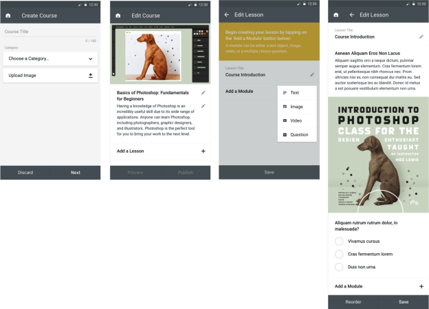
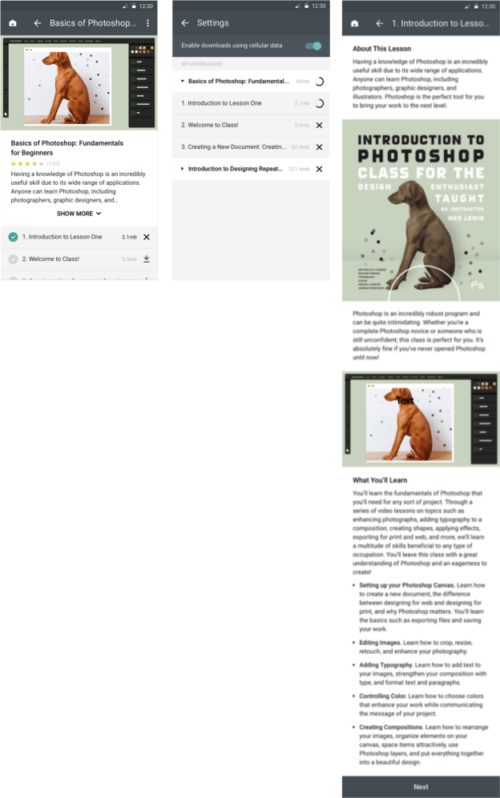

If 2012 was the MOOC (massive open online course) revolution, 2017 was the mobile learning revolution. Over the last six years, digital education has proven a cheap and easy way to scale and democratize knowledge. With online courses available via desktop and now increasingly via smartphone, hundreds of thousands of people have gained access to knowledge that would have been difficult or impossible to obtain.
This is fantastic, but who is teaching these courses? People with computers. And there are many people, particularly in emerging economies, who have invaluable knowledge but no computer to share it with others.
However, an increasing number of people own smartphones, many of whom are leapfrogging computers altogether. In emerging economies, the median percentage of smartphone users rose from 21% in 2013 to 37% in 2015.1 This continues to climb. At the same time, the number of internet users in emerging economies is increasing exponentially as broadband expands. In Africa, the number of Internet users increased 8500% between 2000 and 2017.2
As smartphone usage and Internet availability increase, a mobile app that allows anyone to both take courses and create courses will be extremely valuable in increasing not just access to education, but access to relevant education. Indeed, one of the prominent debates during the MOOC revolution was over the fact that course instructors were all from the western world, teaching from their ivory towers. While much of this knowledge is certainly valuable, locally relevant content is also critical.
I’m thrilled to share that I’ve been working on such an app for the last several months. The designs are complete and I’m soon to commence development. Throughout the remainder of this article, I’ll showcase some of the key features.
App users can both create and take courses
From their profile, users can access all courses they’ve either created or taken.
The app enables flexible course creation
Course creators choose a course title and category, upload an image, write a course description, create lesson titles, and comprise each lesson of four types of content components: text, image, video, and multiple-choice question. They can create as many lessons as they want, add as many components to each lesson as they want, and reorder the components as they wish.

Learners can access courses offline and easily navigate lessons
After enrolling in a course, learners can see each lesson title and the number of megabytes. They can decide to download individual lessons to their phone using cellular data or wait until they have wifi. They can manage all synced content in their settings. After entering a lesson, they will be able to view all content components in one long scroll, and tap “Next” to go to the next lesson.

This is just the beginning. Over time I plan to build additional functionalities that will allow courses to be more interactive and collaborative. I’m very excited about the potential of this tool to empower people around the world to share their knowledge and benefit from that of others.
I am currently looking for beta testers to create mobile courses for their students. I will provide free instructional design services to help course creators make a fantastic course. If you’re interested, please sign up here.
Please post any thoughts on this project below–I would love to hear from you!
1Smartphone Ownership and Internet Usage Continues to Climb in Emerging Economies, Pew Research Center. February 22, 2016.
2Internet Users Statistics for Africa, Internet World Stats. Accessed January 5, 2018.